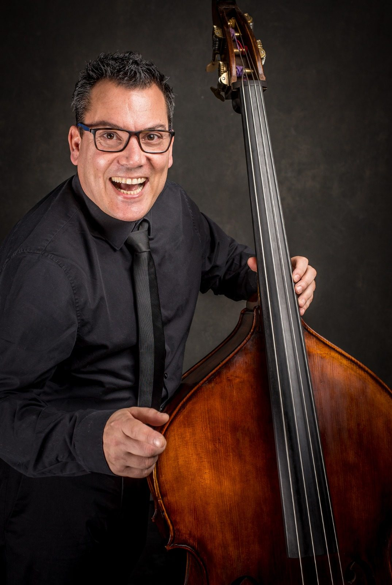
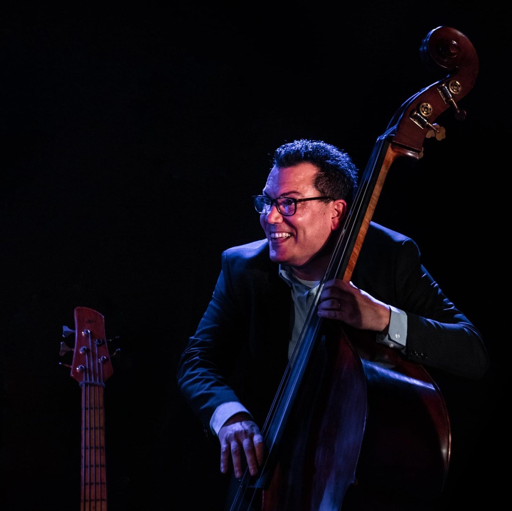

Jazz Eibergen
Cultuurtempel De Oude Mattheüs, Eibergen · 20:30

About

Bassist Daniel Gueli is half Dutch, half Italian. He started playing the guitar at the age of 12 and gradually developed a greater interest in the bass. From the age of 16, he played as an electric bass player and singer in rock bands. After completing a nursing study, Daniel traveled through Africa. That trip pushed him to buy a double bass and make music his work — electric and upright.
As a professional bassist, Daniel has played with musicians such as Nano Stern (Chile), Philippe Lemm, Alexander Beets, Sven Rozier, Jonn Reyna, Fabio Marziali, and Saskia Laroo, with whom he has been on several world tours to South Korea, India, China, Taiwan, Thailand, Oman, Chile, and every corner of Europe.
After being invited by his best friends Ronald Weel and Marcia Bamberg to collaborate with gypsy guitarist John Ligthart, Daniel began to specialize in gypsy jazz. That became the Marcia Bamberg Swing Quartet. When Paulus Schäfer brought him in, the work opened up.
He has played with Stochelo Rosenberg, Jimmy Rosenberg, Johnny Rosenberg, Mozes Rosenberg, Nouche Rosenberg, Martin Limberger, Dominique Paats, Tcha Limberger, and Kussi Weiss.
Alongside touring, Daniel produces, records, and mixes. He is currently working on the next Marcia Bamberg Swing Quartet album. Every Monday he hosts an Acoustic Session at Kaap & Tein in the heart of Amsterdam, with guests from around the world.
Calendar
Cultuurtempel De Oude Mattheüs, Eibergen · 20:30
Cultuurpodium Den Dolder, Den Dolder · 19:00
Every Monday · Amsterdam. Acoustic session at Kaap & Tein. Guests drop in from around the world. Come listen, or come play.
Film
Channel
The Daniel Gueli Gypsy Jazz Channel. Full sets, sessions, and the road in between.
YouTube page Open channelPictures
Booking
{kind=link}
{kind=link}
{kind=link}
{kind=link}
{kind=link}